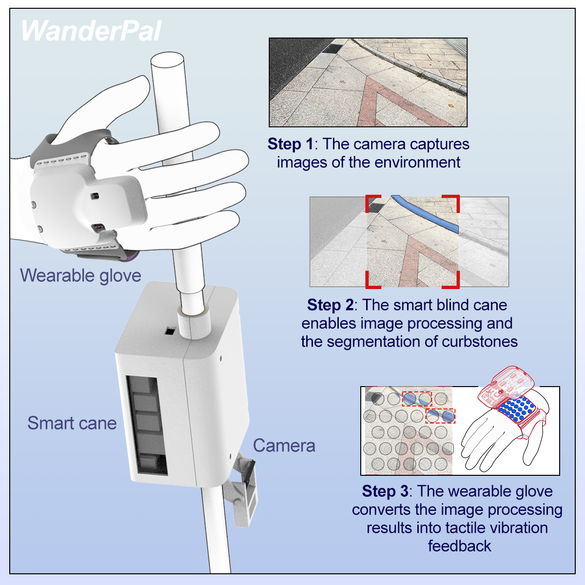

An intelligent wearable to enhance mobility for people with severe visual impairments
Xin Chen, Yujie Gu, Yangyu Fu, Yuze Yang, Cecilia García-Cena, and Pooya Sareh
Published in Device (Elsevier), 2025
Artificial intelligence technology shows great potential for reducing the dependency of people with severe visual impairments (PSVI) on others. However, current technologies often fail to address users' real-world needs and scenarios, either due to limited availability or overly specialized functions.
This study investigated the current experiences and challenges faced by PSVI when navigating urban environments through formative research, and employed a participatory design approach involving visually impaired individuals and local community managers. The research revealed that curbstones serve as effective landmarks for assisting PSVI with outdoor navigation. Based on this finding, we developed a wearable device called WanderPal, which features a walking assistance system that integrates instance segmentation and tactile feedback to convey environmental information to the user.
Experimental results demonstrate that WanderPal significantly enhances users' mobility and reduces route deviations in unfamiliar environments, highlighting the value of participatory design in the practical application of AI technology — particularly in reinforcing human-centered design principles and mitigating potential negative impacts of technology.

Figure: WanderPal system overview. The camera captures images of the environment, the smart cane performs curbstone instance segmentation onboard, and the wearable glove converts the results into tactile vibration feedback.
Please cite our work as follows:
@article{chen2025wanderpal,
title={WanderPal: An intelligent wearable to enhance mobility for people with severe visual impairments},
author={Chen, Xin and Gu, Yujie and Garc{\'\i}a-Cena, Cecilia and Sareh, Pooya},
journal={Device},
volume={3},
number={10},
year={2025},
publisher={Elsevier}
}

Wearables & Embodied AI Group (WEAI)
XXX University
Copyright © 2026
Website based on Colorlib